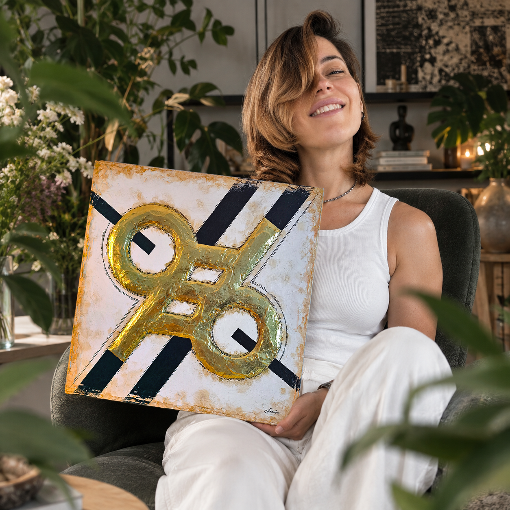

Обо мне

Смыслы × Форма × Визуал
Deep TransformARTion
Меня зовут Наталья, и творчество, которое живёт в этом пространстве, появляется на свет через мои руки. Здесь есть работы, написанные акрилом, и есть графика. В каждом полотне — частичка моей души и частичка того, что предназначено именно его будущему владельцу.
Все картины создаются заранее, зная, кому они предназначены. Чужая работа в чужие руки не попадёт.
В моих работах много символов и скрытых смыслов, которые не разглядеть с первого взгляда — тем интереснее их разгадывать, понимать и разглядывать снова.
Добро пожаловать в моё пространство.